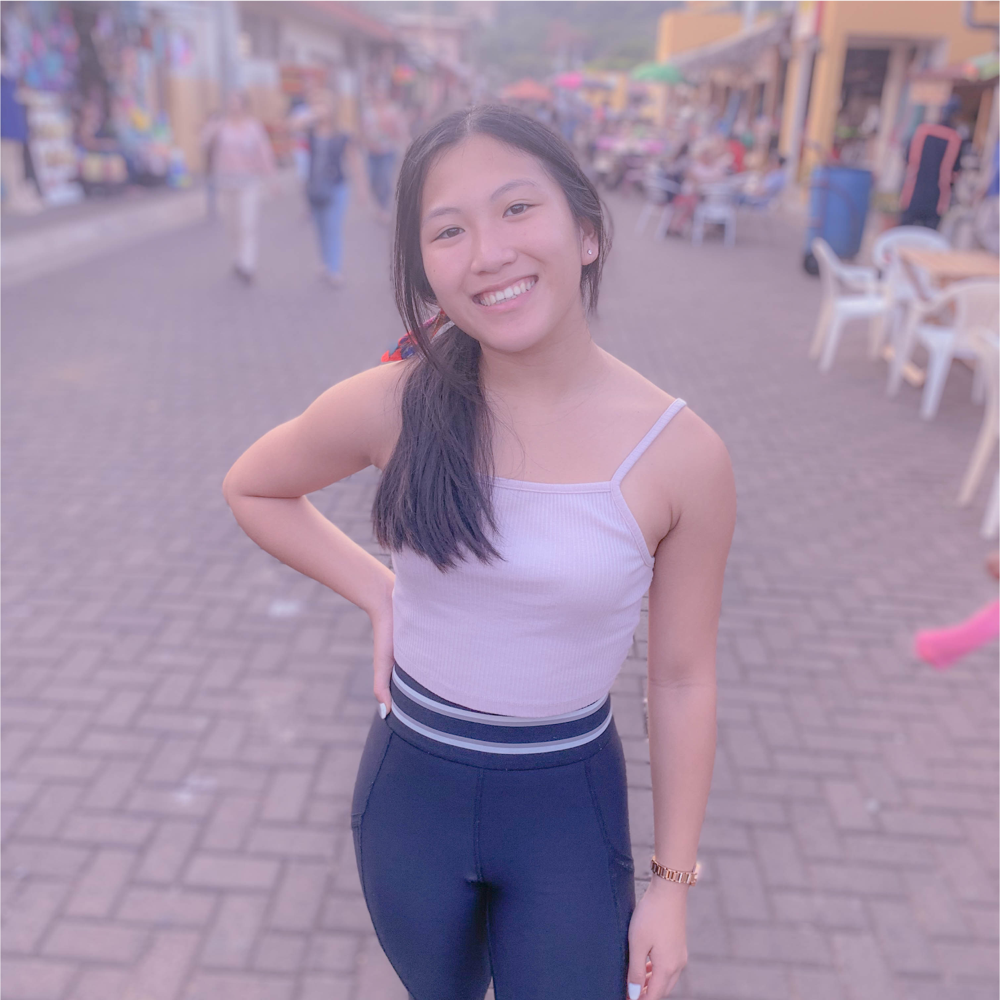
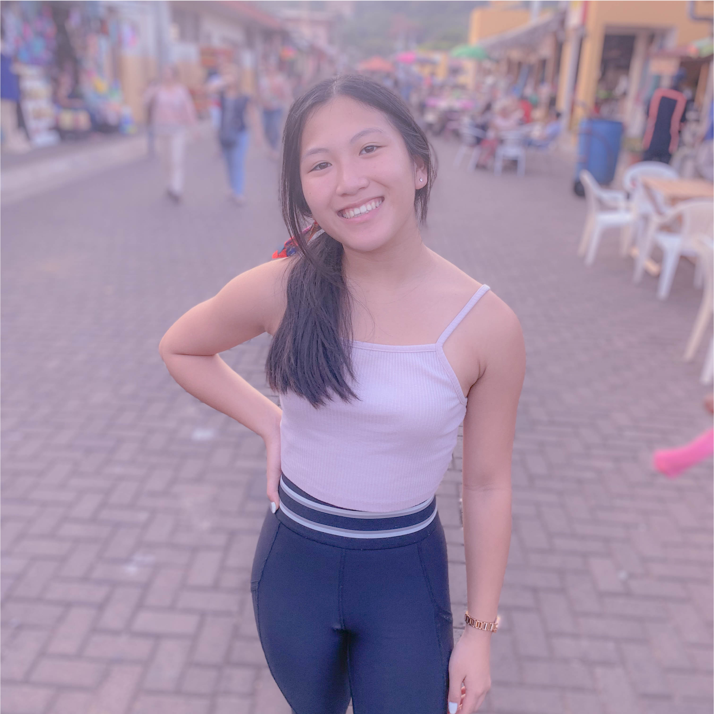
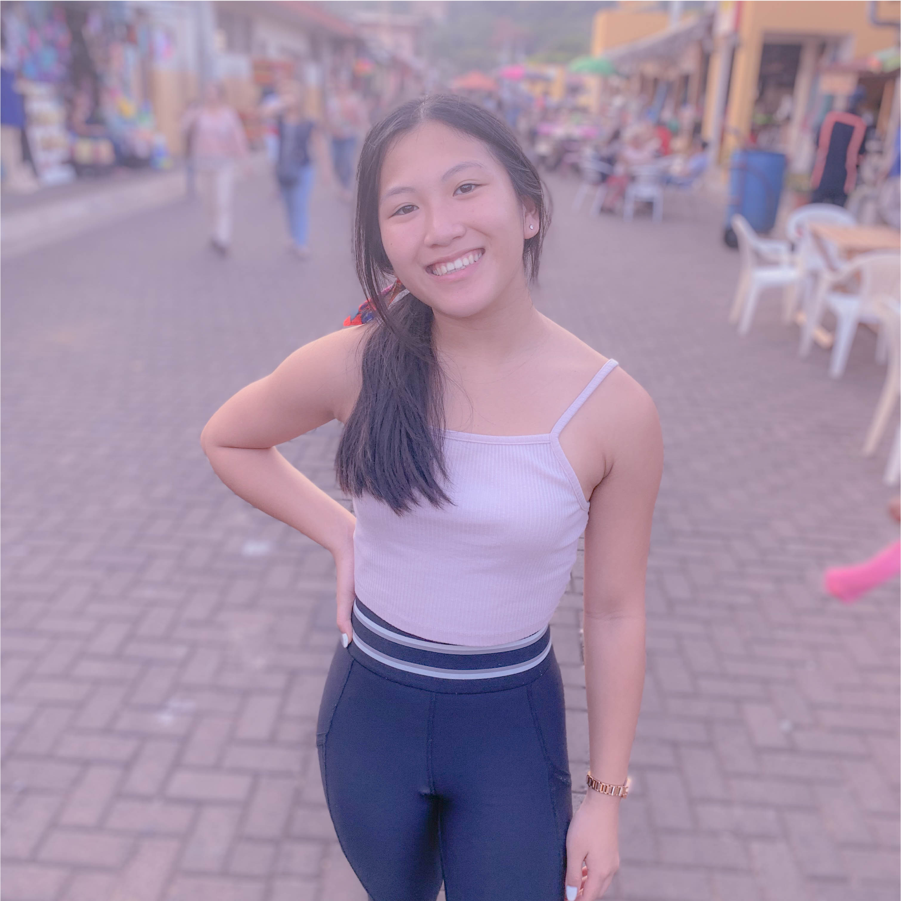
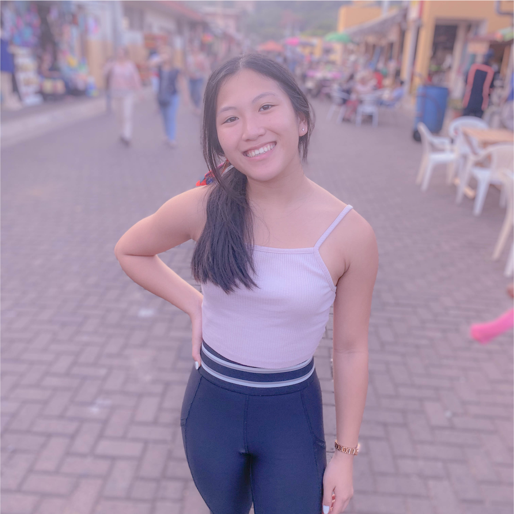

Once again, I am a sophomore at Duke University
studying Computer Science with a minor in Visual & Media Studies and
a certificate in Innovation & Entrepreneurship. I’m passionate about
empowering others in an inclusive environment and working
in a team setting to create positive impacts. I’m a fast learner and
always looking for more ways to grow.
At Duke, I spend most of my time as a co-lead for the tech
team in organizing the HackDuke event held each year. I also am an
engineering & analytics director for Duke Undergraduate Machine Learning.
My passion for women in STEM can be shown through my involvement in
FEMMESConnect and WIT. In FEMMESConnect I get the opportunity to be paired
with local middle and high school students interested in the STEM fields.
I love the limitless ideas I can pursue with just lines of code. In my
free time, I enjoy working on personal coding projects such as developing
apps and websites. I also enjoy trying new foods, making videos weekly for youtube,
and exploring the minimal art skills that I have. Feel free to talk to me about app/web development,
hackathons, youtube, or dogs!
Seeking internships for the summer of 2021– let's talk!
book: the pursuit of happiness
colors: white, green, pink, burgandy
animals: birds, elephants, monkeys
coding resource:
interneting is hard
youtubers: studyquill, jenn im
dog breed:
shiba inus
sleeping in a cold room
going camping to gaze at stars
reading a book before bed
my desk setup
having good company around
showering after a good workout
language learning enthusiast
allergic to orange peels
aspiring restaurant owner
binge-watches crime dramas
enjoy going on hiking trails
likes typing in lowercase